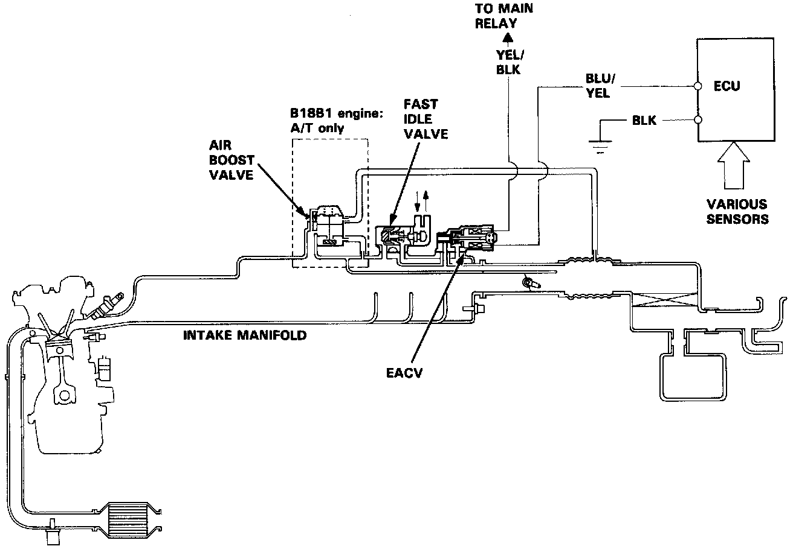
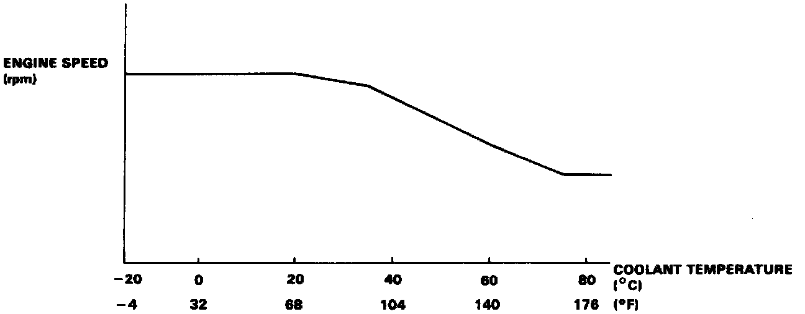

Idle Speed/Throttle Actuator - Electronic: Description and Operation

Idle Control System Description
The idle speed of the engine is controlled by the Electronic Air Control Valve (EACV).
The valve changes the amount of air bypassing into the intake manifold in response to electric current controlled by the ECU. When the EACV is activated, the valve opens to maintain the proper idle speed.

Operation
1. After the engine starts. the EACV opens for a certain time. The amount of air is increased to raise the idle speed about 150-300 rpm.
2. When the coolant temperature is low, the EACV is opened to obtain the proper fast idle speed. The amount of bypassed air is thus controlled in relation to the coolant temperature.